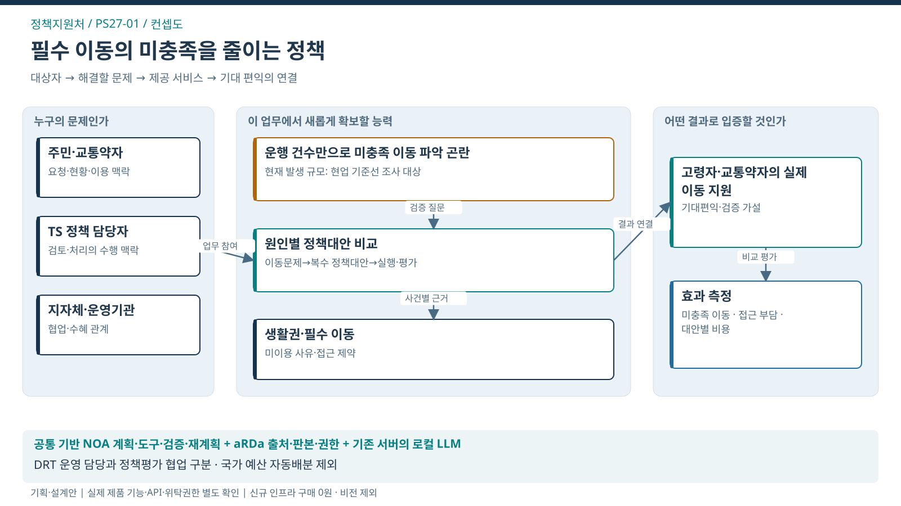

컨셉도 · 필수 이동의 미충족을 줄이는 정책
이 도식의 목적 · 대상자·문제·제공 서비스·기대 편익의 관계

도식 원본 확대 · SVG · PPT 삽입용 PNG · 1600×900


핵심 해석
- 대표 사건: 생활권·필수이동·정책대안·실행결과
- 처별 고유 로직: 이동문제→복수 정책대안→실행·평가
- 조건 분기: 실행권한·재원 확보 여부? → 충족 시 권한기관의 정책 실험 / 미충족 시 검토 유지·조건 협의
- 공식 결과: 필수 이동 충족·잔여 수요 확인
- 책임 경계: DRT 운영 담당과 정책평가 협업 구분 · 국가 예산 자동배분 제외
- 검증 상태: 실제 제품 기능·API·위탁권한·도입효과 미확정
제안의 근거·제품·기대효과
PS · PS27-01
정책지원처 — 필수 이동의 미충족을 줄이는 정책 실행
생활 밀착형 이동·균형 서비스에 대한 기여 가설
- 현재 업무·기존 기반
- 첨단모빌리티·대중교통 현황조사, 개선계획·정책 연구 / 현황조사·지자체 집계자료·TS-DRT 결과 연계 협의
- 필요 근거·문제정의
- 업무 근거: TS 공개업무 안내
해결할 문제 가설: 예약·운행 건수만으로 병원·장보기 등 필요한 이동이 충족됐는지 알기 어렵다. 지역별 수기·부정수급 문제의 규모는 사용자 가설로 조사함 - 달성할 목적
- 이동수요와 실행 가능한 대안에 근거한 필수 이동 미충족 감소
- 사용 제품·기술
- NOA + aRDa + 기존 서버의 로컬 LLM
미이용 사유·대표성 검토 / 대안별 비용·편익 비교 / 실행 결과에 따른 정책 수정
기존 시스템·정형 규칙·전문분석 도구의 연계 - 업무 전환
- 필수 이동의 제약과 미이용 원인을 검증하고 대안·재원·실행권자·실제 이용결과를 연결해 정책을 조정
- 기대효과·확인 지표
- 수혜자: 고령자·교통약자·필수 이동이 어려운 주민
기대효과: 기관 — 이용실적 중심 평가에서 미충족 이동 개선으로 전환 / 주민 — 필요한 이동의 접근성·완료 가능성 개선
확인 지표: 필수 이동 미충족률 / 예약 후 실제 이동 완료 / 이용자 부담·접근성
기준값·목표 개선율: 현업 실증으로 확정 - 사람의 역할·적용 조건
- 전문 판단·실행: 정책 담당자의 대안 검토와 관계기관의 예산·사업 결정
이번 과업 제외: 전국 예산 자동 배분, 개인 부정수급 단정·제재, LLM 배차 최적화·전화번호만 본인확인
선행 확인: 한 생활권의 실행 협약·권한 있는 예산주체·집계데이터·비이용자 조사
공식 업무 존재와 문제 발생규모·구매수요는 별도. 제품 역할은 적용안이며 TS 설치·성능 검증 완료를 의미하지 않음.
기술 근거: 제품별 근거·재사용 판단 · 기획 출처·확인 한계
사전기획·설계안 v1.0 · 2026-09-22 · 공고 미매핑 · 운영 시스템이 아닌 검토자료
이동수요를 파악하고 실행 가능한 대안을 비교해 실제 이동의 미충족을 줄임.
- 이 처의 대표 설계는 PS27-01 · 필수 이동의 미충족을 줄이는 정책 실행임.
- 대화의 연간 과업은 아래에 모두 보존하되, 이번 화면·요구·공수는 대표 서비스 1개와 그 검증·인수에 한정함. 8개 처 전체 및 TS 전 업무의 구축비로 확대 해석하지 않음.
1. 목적 → 운영 변화 → 방법
| 구분 | 설계 내용 |
|---|---|
| 국민·기업 수혜자 | 고령자·교통약자·필수 이동이 어려운 주민 |
| 직접 사용자 | TS 정책 담당자·지자체 교통 담당자 |
| 확인할 현행 한계 | 예약·운행 건수만으로 병원·장보기 등 필요한 이동이 충족됐는지 알기 어려움. 지역별 수기·부정수급 문제의 규모는 사용자 가설로 조사함. |
| 기존 업무 기반 | 현황조사·계획수립·정책지원 및 기존 TS-DRT 운영 |
| AX로 바꿀 운영방식 | 필수 이동의 제약과 미이용 원인을 검증하고 대안·재원·실행권자·실제 이용결과를 연결해 정책을 조정 |
| 완료의 정의 | 권한기관의 실제 실행 여부와 필수 이동 충족 결과·잔여 수요가 확인됨 |
| CCK 방법 | NOA의 목표·계획·도구·검증·재계획 + aRDa 근거 구조 + 기존 업무시스템 |
| 계속 사람이 맡을 일 | 전문 검토·예외 판단·공식 승인·현장 조치·성과 해석 |
2. 2027년 과업 편성 보존
| 과업 ID | 2027년 대화 편성명 | 이번 설계·산정 위치 |
|---|---|---|
| PS27-01 | 필수 이동의 미충족 감소를 위한 지역 맞춤형 정책설계·실행지원 AX | 대표 상세설계 / 대표 증분 WBS에 한정 |
| PS27-02 | 첨단모빌리티 비이용 장벽 해소·서비스 운영전환 AX | 확장 후보 / 이번 기준 시나리오 미포함 |
| PS27-03 | 정책효과·투자판단·Noa 기반 운영전환 검증 | 공통 평가·인수 / 대표 범위 평가만 W06; 다른 과업은 미산정 |
| PS27-04 | 기존 현황조사·정책자료·지자체 지원의 안정적 계속 수행 | 계속업무 / 이번 기준 시나리오 미포함 |
- ‘공통 평가·인수’의 전사 도구는 CORE에서 한 번, 해당 대표업무의 전문검수·현업 인수는 이 처 W06에서 산정함.
- 계속업무와 다른 확장 후보를 이 대표 과업의 개발비로 청구하지 않음.
3. 구현 범위와 선행조건
| 범위 | 내용 |
|---|---|
| 포함 | 대표 사건 1유형, 화면 5종, 문서 4종/최대 300건, 업무규칙 12개, 예외 8종, 업무시스템 1종 |
| 수량 성격 | 검토를 위한 설계자 가정. 실제 보유량·확정 발주물량 아님 |
| 전제 | 한 생활권의 실행 협약·권한 있는 예산주체·집계데이터·비이용자 조사 |
| 협업 역할 | 모빌리티연구처(기존 DRT)·지자체·운영기관·당사자 대표 |
| 제외 | 전국 예산 자동 배분, 개인 부정수급 단정·제재, LLM 배차 최적화·전화번호만 본인확인 |
| 공통 제약 | 기존 로컬 서버·로컬 LLM·신규 인프라 0원. 기계 판독 가능한 텍스트/표만 사용. 사진·스캔 OCR·영상 제외 |
4. 기술·업무 대안과 사전 가치판단
| 대안 | 장점 | 한계·적용 판단 |
|---|---|---|
| 기존 SI/규칙 개선 | 정해진 양식·상태·수치 검증에 유리 | 예외가 고정되어 있으면 우선 적용 |
| 문서 AI 단일기능 | 자료 정리·보완 설명 부담 감소 | 사건 변화에 따른 과업 재구성과 실제 결과 확인은 별도 |
| NOA Agent + 기존 SI | 변화에 맞춘 계획·허용도구·결과대사 연결 | 기준·권한·예외 검증비와 운영 책임 필요 |
사전 판단: DRT를 포함하는 국민 이동편익 사업.
전국 플랫폼 재구축 대신 한 생활권에서 정책·운영 결과의 연결 가치를 확인.
효과가 검증됐다는 의미가 아님. Agent가 없어도 같은 결과를 얻는 경우 SI 개선으로 편입함.
성과지표는 필수 이동 미충족률 / 예약 후 실제 이동 완료 / 이용자 부담·접근성.
분모·비교조건은 생활권·이동목적·기능제약별 대상; 미이용자도 포함해 조사.
도입 전 기준선과 최소 의미 있는 변화량을 현업과 합의한 뒤 비교 평가함.
현재 효과율·ROI·감축인원은 산정하지 않음.
5. 기획 기준 P01~P07
| 기준 | 이 기획의 충족 경로 |
|---|---|
| P01 국민 문제 | 고령자·교통약자·필수 이동이 어려운 주민의 결과를 목표로 설정 |
| P02 현업 수용 | 시간을 감축인원으로 환산하지 않으며 검수·예외 대응 역할 반영 |
| P03 AX+SI | SI 비교안과 Agent 추가가치를 동일 사건으로 검증 |
| P04 법정/수탁 연계 | 공개 업무와 연결한 후보. 현행 위탁범위·세부 전결은 별도 확인 |
| P05 재사용 | 목표·근거·승인·대사 공통화; 부서 데이터권한 통합 아님 |
| P06 기관·권한 | TS 지원, 외부 결정, 현장 실행 책임 분리 |
| P07 WHY·재정 | 업무 편익·직접인건비·미산정 비용·중단조건을 함께 제시 |
- 근거: 처별 편성 대화 · 조직운영 통합기능 대화 · 근거의 범위와 한계.
- 원천 대화는 기획 이력이며 공식 직제·납품 실적 증거가 아님.